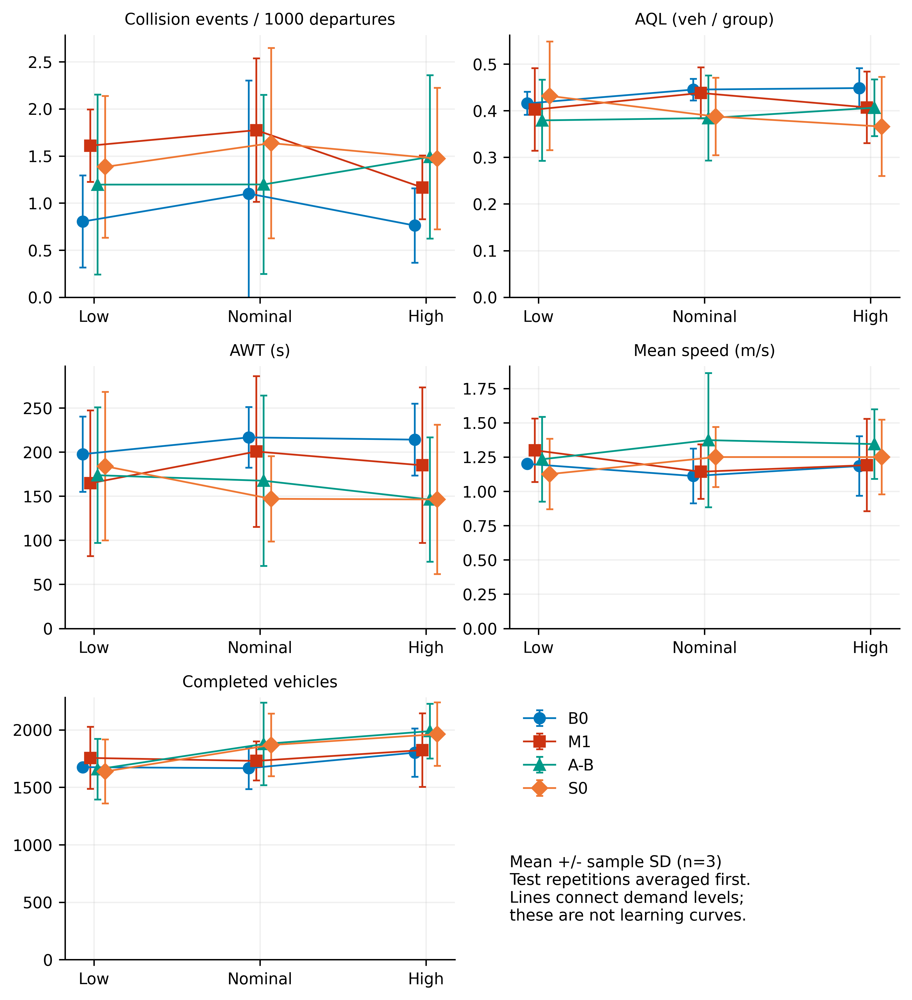
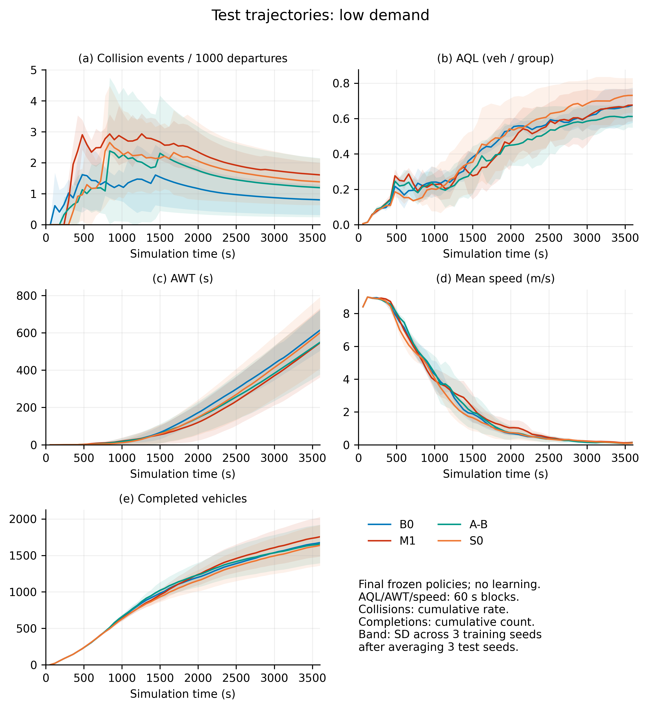
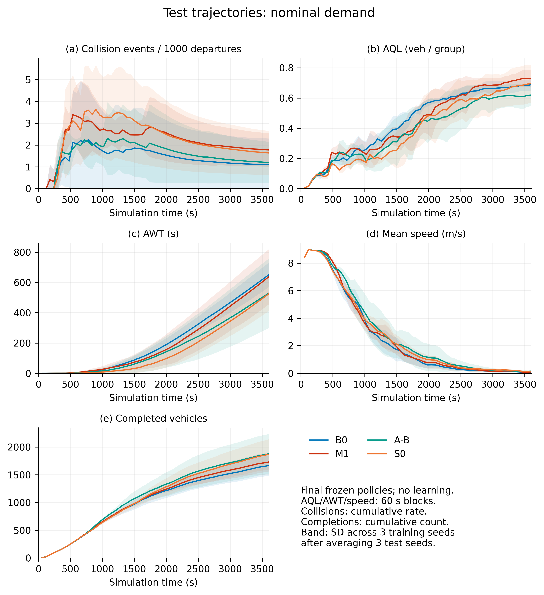
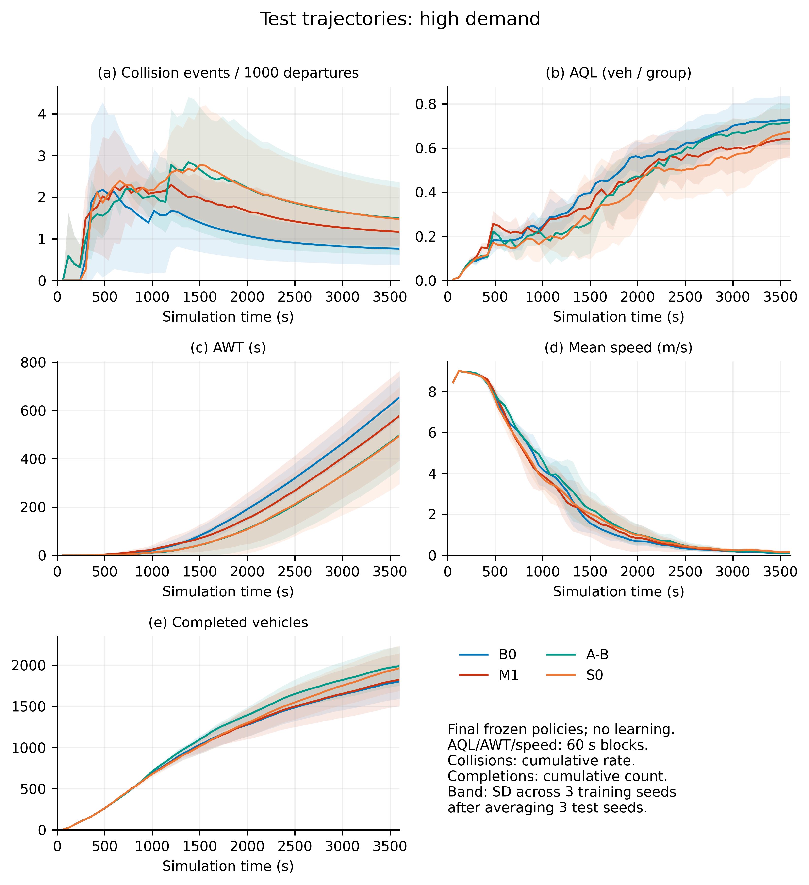
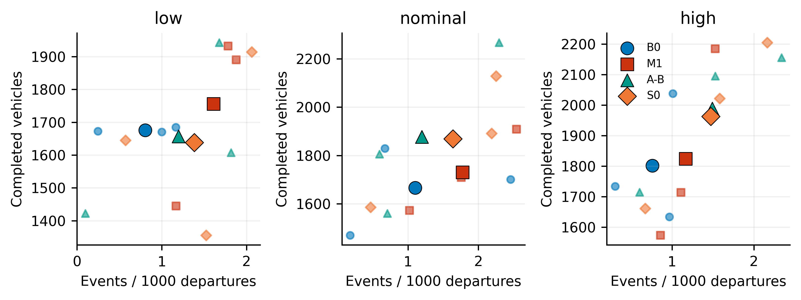
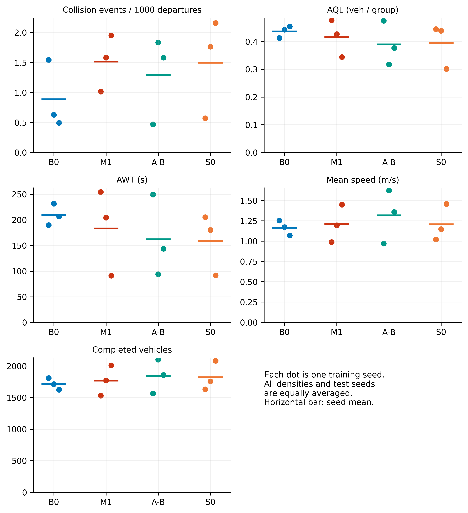
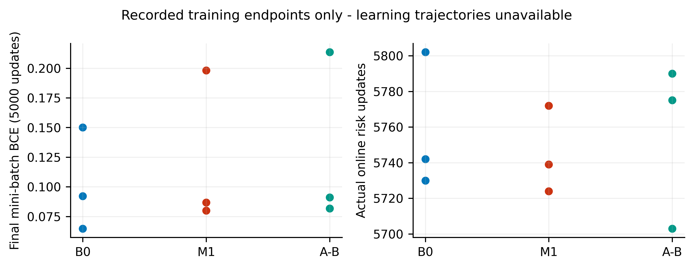

空间与时间Transformer风险引导的无信号交叉口决策
统计日期：2026-11-28
对 P5 正式四组实验的12次在线训练、9次离线训练和108次冻结闭环测试进行全量分析。所有正式测试物理日志逐行重算，结果与保存摘要及SHA-256完全一致。M1相对B0的物理碰撞事件率在三种密度均更高；排队、等待和通行指标的部分改善伴随安全代价，不能支持“降低碰撞同时保持效率”或“具有稳定综合优势”的结论。近期偏置消融效果随密度和种子变化，不能确认其普遍必要性。
训练阶段没有保存五项物理指标时序，也没有完整损失轨迹或中间检查点。真实五指标训练曲线、收敛速度及训练动态稳定性无法追溯。本报告保留这一缺口，以全部真实测试曲线及训练末点描述能够观察到的结果，不以测试轨迹代替训练曲线。
项目中实际目录为 plan/p5/runs/20261123T094822803672Z；用户所述 plan/run/p5 不存在。统计覆盖正式 online、offline 和 closed-loop 中的全部有效四组。provenance 下3份历史smoke物理日志、旧运行复用凭据以及已退役结构组不作为新增重复。旧summary中的历史任务名称不用于推断当前有效矩阵。
M1采用自车与八组聚合车流共九个token，先空间Transformer，再沿各组的历史进行共享时间Transformer编码，最后自车条件读出风险。B0为共同修复环境及标签后的原单序列时间风险器；A-B仅将M1的时间近期偏置置零；S0取消风险分数和风险奖励，保留原其他奖励与死锁干预。因此S0不等于完全没有安全机制，B0也不是仅移除一个空间层的严格单模块消融。
训练种子11、23、37各自从头训练100,000决策步；相同种子的初始actor哈希在四组间一致。风险器另在共同P4语料上离线训练5,000次更新，batch=128、学习率与weight decay均为1e-5。离线和在线风险器分别从头训练，离线识别表现不直接对应闭环策略收益。均使用固定预算末点权重，不按测试表现选优。
每个训练种子在low/nominal/high三档需求及3000/3001/3002三测试种子下评价，合计108次。每次3,600仿真步，步长1s，包含reset和等待观测的空闲时间；SAC及风险器评价期更新均为零。密度仅将测试路线flow的vehsPerHour缩放为0.5/1/1.5，显式背景车辆不变，不能视为全网实际出发量同比例变化。
目标实验环境为Linux、RTX 4090、Python 3.7.12、PyTorch 1.13.1+cu117和SUMO 1.12.0。本次只进行本地统计绘图，不训练、不运行仿真。PPO、FCFS、mixed的共同场景结果仍缺失，完整P5研究验收未通过；其他论文非共同场景的数字不能填补该缺口。
物理碰撞率=1,000×车辆对碰撞事件起点数/唯一出发车辆数，单位为事件/千出发。连续重复报告的同一车辆对去重，消失后再出现记新事件；不是百分比，不是唯一碰撞车辆占比，也不是旧conflict_rate。附录同时报告真实事件数、碰撞车辆数及出发分母。
AQL=各步各组区域车辆数总和/组时间样本数。四路口×八车流组，共32组。Env按距路口≤30m收集所有进口车辆，没有停车速度阈值，故项目AQL实为区域占用车辆数，不能等同标准停车队列长度。AWT先求每组内车辆已有路口等待值均数，再对组和时间等权平均；空组取零。该值不是完成车辆的平均全程延误，也不是全部车辆等权平均等待。
平均速度=全网各步车辆速度总和/车辆时间样本数，单位m/s；不能先求各步平均速度再简单平均。完成车辆数取唯一到达数arrived；另附successful_arrivals即未发生碰撞的到达数。截止3,600步仍未到达的行程被截尾，完成数增加不能自动说明所有行程用时均下降。
每指标先对同一训练种子、同一密度的三个测试种子求平均，再报告三个训练种子的均值与样本标准差。跨密度总体按三档等权平均。表中粗体最优、下划线次优，排序仅代表表内均值，不代表显著性。变化幅度统一为100×(M1−参照)/参照，前三指标负值为改善，后两指标正值为改善。
配对比较以训练种子为单元，n=3。枚举全部27种有放回重采样的配对差值均值，给出探索性95% percentile bootstrap区间。区间对应绝对差，不能视为大样本推断或非劣效证据。不把108次测试、相邻时间步或风险窗口当成独立训练重复，也不通过多个检验挑选显著结果。
| 方案 | 物理碰撞/千出发 ↓ | AQL(辆/组) ↓ | AWT(s) ↓ | 速度(m/s) ↑ | 完成车辆(辆) ↑ |
|---|---|---|---|---|---|
| B0 | 0.889 ± 0.571 | 0.436 ± 0.021 | 209.409 ± 21.117 | 1.165 ± 0.092 | 1714.7 ± 91.8 |
| M1 | 1.517 ± 0.471 | 0.416 ± 0.067 | 183.379 ± 83.625 | 1.211 ± 0.230 | 1769.9 ± 239.1 |
| S0 | 1.498 ± 0.827 | 0.395 ± 0.081 | 159.021 ± 59.597 | 1.208 ± 0.225 | 1823.1 ± 233.1 |
表1 对比实验，三密度等权；均值±训练种子间样本标准差，n=3。
M1相对B0：物理碰撞/千出发 +70.68%；AQL -4.73%；AWT -12.43%；速度 +3.91%；完成车辆 +3.22%。碰撞率上升约70.7%，同时AQL下降约4.7%、AWT下降约12.4%、速度提高约3.9%、完成数提高约3.2%。这是安全与效率权衡，不能解释为双重提升。
M1相对S0：物理碰撞/千出发 +1.26%；AQL +5.26%；AWT +15.32%；速度 +0.23%；完成车辆 -2.92%。跨密度平均并未体现更低碰撞事件率，排队、等待和完成数反而较差；平均速度仅略高。风险分支的存在和自然更新完成不等于闭环安全收益得到验证。

| 方案 | 物理碰撞/千出发 ↓ | AQL(辆/组) ↓ | AWT(s) ↓ | 速度(m/s) ↑ | 完成车辆(辆) ↑ |
|---|---|---|---|---|---|
| B0 | 0.804 ± 0.489 | 0.416 ± 0.025 | 197.586 ± 42.650 | 1.200 ± 0.026 | 1675.7 ± 7.6 |
| M1 | 1.610 ± 0.385 | 0.402 ± 0.089 | 164.600 ± 82.520 | 1.299 ± 0.231 | 1755.8 ± 269.9 |
| A-B | 1.196 ± 0.955 | 0.379 ± 0.087 | 173.701 ± 76.930 | 1.234 ± 0.309 | 1657.3 ± 263.6 |
| S0 | 1.385 ± 0.753 | 0.432 ± 0.116 | 183.906 ± 84.129 | 1.125 ± 0.257 | 1638.1 ± 279.1 |
表2 low需求下全部四组，均值±样本标准差。
M1相对B0：物理碰撞/千出发 +100.32%；AQL -3.19%；AWT -16.69%；速度 +8.26%；完成车辆 +4.78%。M1相对A-B：物理碰撞/千出发 +34.58%；AQL +6.08%；AWT -5.24%；速度 +5.31%；完成车辆 +5.94%。M1相对S0：物理碰撞/千出发 +16.27%；AQL -6.79%；AWT -10.50%；速度 +15.42%；完成车辆 +7.18%。

| 方案 | 物理碰撞/千出发 ↓ | AQL(辆/组) ↓ | AWT(s) ↓ | 速度(m/s) ↑ | 完成车辆(辆) ↑ |
|---|---|---|---|---|---|
| B0 | 1.101 ± 1.200 | 0.445 ± 0.023 | 216.595 ± 34.447 | 1.112 ± 0.199 | 1666.6 ± 182.5 |
| M1 | 1.774 ± 0.762 | 0.438 ± 0.055 | 200.585 ± 85.548 | 1.143 ± 0.198 | 1729.9 ± 169.2 |
| A-B | 1.198 ± 0.952 | 0.384 ± 0.091 | 167.429 ± 96.565 | 1.373 ± 0.489 | 1877.4 ± 359.0 |
| S0 | 1.636 ± 1.012 | 0.387 ± 0.083 | 146.944 ± 48.446 | 1.250 ± 0.219 | 1868.4 ± 271.9 |
表3 nominal需求下全部四组，均值±样本标准差。
M1相对B0：物理碰撞/千出发 +61.18%；AQL -1.63%；AWT -7.39%；速度 +2.80%；完成车辆 +3.80%。M1相对A-B：物理碰撞/千出发 +48.13%；AQL +14.02%；AWT +19.80%；速度 -16.77%；完成车辆 -7.86%。M1相对S0：物理碰撞/千出发 +8.43%；AQL +13.03%；AWT +36.50%；速度 -8.56%；完成车辆 -7.42%。

| 方案 | 物理碰撞/千出发 ↓ | AQL(辆/组) ↓ | AWT(s) ↓ | 速度(m/s) ↑ | 完成车辆(辆) ↑ |
|---|---|---|---|---|---|
| B0 | 0.761 ± 0.395 | 0.448 ± 0.042 | 214.048 ± 40.653 | 1.184 ± 0.216 | 1802.0 ± 210.7 |
| M1 | 1.166 ± 0.338 | 0.407 ± 0.077 | 184.950 ± 88.187 | 1.191 ± 0.337 | 1824.0 ± 320.2 |
| A-B | 1.490 ± 0.867 | 0.406 ± 0.061 | 146.105 ± 70.647 | 1.344 ± 0.254 | 1988.9 ± 239.1 |
| S0 | 1.472 ± 0.752 | 0.366 ± 0.106 | 146.214 ± 84.599 | 1.249 ± 0.272 | 1962.8 ± 276.4 |
表4 high需求下全部四组，均值±样本标准差。
M1相对B0：物理碰撞/千出发 +53.12%；AQL -9.24%；AWT -13.59%；速度 +0.55%；完成车辆 +1.22%。M1相对A-B：物理碰撞/千出发 -21.78%；AQL +0.16%；AWT +26.59%；速度 -11.41%；完成车辆 -8.29%。M1相对S0：物理碰撞/千出发 -20.82%；AQL +11.23%；AWT +26.49%；速度 -4.67%；完成车辆 -7.07%。

| 需求 | 方案 | 末段AQL | 末段AWT(s) | 末段速度(m/s) |
|---|---|---|---|---|
| low | B0 | 0.676 | 614.1 | 0.118 |
| low | M1 | 0.676 | 546.4 | 0.144 |
| low | A-B | 0.611 | 549.0 | 0.123 |
| low | S0 | 0.731 | 600.3 | 0.107 |
| nominal | B0 | 0.688 | 649.9 | 0.093 |
| nominal | M1 | 0.730 | 637.1 | 0.099 |
| nominal | A-B | 0.620 | 528.5 | 0.155 |
| nominal | S0 | 0.695 | 524.7 | 0.139 |
| high | B0 | 0.726 | 654.6 | 0.101 |
| high | M1 | 0.641 | 578.0 | 0.135 |
| high | A-B | 0.717 | 497.7 | 0.134 |
| high | S0 | 0.674 | 495.4 | 0.158 |
表4a 测试最后60s的真实分块均值；每方案每密度九次测试全部纳入。
各方法从测试初期较高速度逐步下降，到最后60s的各组均值仅约0.09至0.16m/s；末段AWT约495至655s，AQL末段高于全时段均值，累计到达数增长趋缓。M1 nominal末段速度仅0.099m/s、AWT约637.1s，说明当前策略没有维持稳定畅通。时间平均速度约1.1至1.4m/s掩盖了更严重的末段退化，不能单以全时段均值宣称持续通行能力。
事件时序重算显示：M1的174起碰撞中167起发生于前1800s，B0为98/98，A-B为151/155，S0为176/181。后半程事故较少与低速滞留同时出现，但这些记录不能单独证明因果。累计碰撞率随时间下降也受累计出发分母扩大影响，不是学习到更安全策略的证据。需要同时控制车辆暴露、滞留与完成情况，才能区分真实风险降低和缺少运动机会。
三密度时域曲线未显示持续畅通的稳态运行，当前实验尤其不能支持拥堵环境下已具备稳定运行能力。建议增加路口分项与未插入需求统计，并检查死锁干预及长期饱和机制；这些是后续验证方向，本报告不改写源代码或现有实验。
| 方案 | 物理碰撞/千出发 ↓ | AQL(辆/组) ↓ | AWT(s) ↓ | 速度(m/s) ↑ | 完成车辆(辆) ↑ |
|---|---|---|---|---|---|
| M1 | 1.517 ± 0.471 | 0.416 ± 0.067 | 183.379 ± 83.625 | 1.211 ± 0.230 | 1769.9 ± 239.1 |
| A-B | 1.295 ± 0.726 | 0.390 ± 0.079 | 162.412 ± 79.349 | 1.317 ± 0.328 | 1841.2 ± 268.3 |
| S0 | 1.498 ± 0.827 | 0.395 ± 0.081 | 159.021 ± 59.597 | 1.208 ± 0.225 | 1823.1 ± 233.1 |
表5 消融实验，三密度等权均值±样本标准差；粗体和下划线只在表内三组排序。
M1相对A-B：物理碰撞/千出发 +17.13%；AQL +6.63%；AWT +12.91%；速度 -8.05%；完成车辆 -3.87%。总体上，去除近期偏置的A-B拥有更低碰撞率、更低AQL和AWT、更高速度及更多完成车辆。nominal档A-B五项均值均优于M1。该均值层面的全面优势不等同经过充分功效验证的统计支配，但已足以否定“偏置在全部条件都有效”的描述。
low档M1相对A-B的等待、速度和完成数较好，但碰撞率更高且AQL更差；high档M1碰撞率较低，而速度、等待和完成数较差，AQL也略高。偏置作用具有明显场景依赖，没有一致证据证明其必要性。
M1与B0同时改变token嵌入、表示宽度、空间及逐组时间组织和末步读出，只能比较整体架构。M1与S0检验整个风险反馈分支；独立空间层、逐组历史保持及读出模块的消融已经退出当前协议，现有数据不能分别支持这些结构创新点。若论文将创新限定为聚合车流观测下的整体适配，当前结果可作为其效果评价，但并未证明安全改善。


| 参照 | 指标 | 绝对变化 | 相对变化 | 配对95%区间 |
|---|---|---|---|---|
| B0 | 物理碰撞/千出发 ↓ | +0.6280 | +70.68% | [-0.2065, +1.3484] |
| B0 | AQL(辆/组) ↓ | -0.0206 | -4.73% | [-0.0895, +0.0465] |
| B0 | AWT(s) ↓ | -26.0309 | -12.43% | [-96.4612, +44.7876] |
| B0 | 速度(m/s) ↑ | +0.0456 | +3.91% | [-0.2021, +0.3012] |
| B0 | 完成车辆(辆) ↑ | +55.1481 | +3.22% | [-204.6981, +313.6074] |
| A-B | 物理碰撞/千出发 ↓ | +0.2219 | +17.13% | [-0.1165, +0.5084] |
| A-B | AQL(辆/组) ↓ | +0.0259 | +6.63% | [-0.0253, +0.0856] |
| A-B | AWT(s) ↓ | +20.9670 | +12.91% | [-40.1009, +87.6385] |
| A-B | 速度(m/s) ↑ | -0.1061 | -8.05% | [-0.3305, +0.0748] |
| A-B | 完成车辆(辆) ↑ | -71.3333 | -3.87% | [-266.7259, +111.5370] |
| S0 | 物理碰撞/千出发 ↓ | +0.0189 | +1.26% | [-0.2015, +0.3094] |
| S0 | AQL(辆/组) ↓ | +0.0208 | +5.26% | [-0.0025, +0.0402] |
| S0 | AWT(s) ↓ | +24.3574 | +15.32% | [+4.8656, +43.8373] |
| S0 | 速度(m/s) ↑ | +0.0028 | +0.23% | [-0.0269, +0.0365] |
| S0 | 完成车辆(辆) ↑ | -53.2222 | -2.92% | [-94.8648, -4.3463] |
表6 M1相对各参照的跨密度等权变化及探索性配对区间。
各密度的全部配对差值、区间和三个种子原值保存在tables/paired_changes.csv。n=3的bootstrap分布只有有限支持点，区间可能较窄或退化，不应据此作“显著优于”“达到等效”或“风险为零”的推断。
种子间误差棒和图6显示最终策略的重复性存在波动，但它不是训练迭代稳定性。M1相对B0的总体五指标配对区间均跨零，三个种子的差值还出现方向反转，平均改善或恶化都不能被表述为稳定、已确认的普遍效应。不同需求档位的排序也会变化。增加测试流可减少场景噪声，却不能代替独立训练重复；应预先锁定安全容忍范围、效率非劣效界值及样本量，再做验证。
train()未创建或注入PhysicalObserver，因此没有逐步或逐episode的五项物理指标；训练result仅记录预算、优化次数、权重、样本池和推理统计。DataMonitor虽在内存中收集部分量，但worker不调用持久化接口，Env.close只关闭SUMO，正式目录没有相应pkl文件。在线样本/事件流服务标签审计，不包含恢复全网速度、32组队列和到达暴露所需的完整分母。
fit_offline()将每次损失追加到内存losses，但最终只写final_loss，没有完整损失轨迹。正式运行也没有中间checkpoint冻结测试。因而当前不能绘制真实五指标训练曲线，不能判定M1收敛更快、训练更稳定或训练末段已经收敛。补画平滑曲线或将测试时间误作训练步都会引入不存在的证据。

四组各训练100,000决策步，SAC实际优化均为9,990次。M1自然风险更新5724/5772/5739次，B0为5802/5730/5742次，A-B为5790/5775/5703次，尝试均5994次，S0为零。不同策略产生的自然事件暴露不同，即使触发预算相同，有效风险优化数也不完全一致。这一差异需要披露，但不能仅凭更新数直接解释安全表现。
建议后续新运行统一记录每仿真步物理量、决策步与时间映射、每episode的总奖励与各奖励项、SAC及风险损失、梯度和自然风险池暴露，并按预定间隔保存冻结checkpoint评价。训练探索曲线与确定性策略测试曲线分开标注，不回填现有运行。
| 风险器 | AP | AUROC | 原始Brier | 原始FNR | 校准Brier |
|---|---|---|---|---|---|
| B0 | 0.00286 ± 0.00034 | 0.79285 ± 0.07651 | 0.02016 ± 0.00117 | 0.95833 ± 0.00000 | 0.000722 |
| M1 | 0.00326 ± 0.00023 | 0.88097 ± 0.00975 | 0.05885 ± 0.00470 | 0.75000 ± 0.00000 | 0.000726 |
| A-B | 0.00312 ± 0.00056 | 0.86885 ± 0.01080 | 0.05210 ± 0.00833 | 0.81944 ± 0.02406 | 0.000723 |
表7 共同离线测试集，均值±训练种子间标准差；校准Brier列为均值。
三种风险器共用33,594个测试窗口，仅24个正窗口，正例率约0.000714。24个正窗口不等同24起独立事故，相邻窗口相关，风险识别证据支持量有限。AP的随机排序基准约为该正例率；较高AUROC不能抵消较低AP或较高漏报。
校准只在validation拟合，未用于在线风险奖励。校准后的0.5阈值在九个测试结果中FNR均为1；Brier较低不能单独证明风险可用于可靠报警。常数零预测在这个稀疏测试集上的Brier约为24/33594=0.000714，需要与该基率参照一起判断校准收益。原始分数不应直接解释为已校准碰撞概率。
参数量、batch=1同步前向p50、在线平均批推理时延和真实优化次数保存在data/offline_metrics.csv及data/online_endpoints.csv。基准前向使用合成输入，不含历史组装、传输和环境交互；在线摊销每车耗时也不等于单车延迟。计算成本需与实测闭环收益一同评价，不从注意力矩阵数量推断实时优势。
| 风险器 | 参数量 | batch1前向p50 | 在线批均时延 | 有效风险更新均值 |
|---|---|---|---|---|
| B0 | 1223681 | 0.476 | 1.905 | 5758.0 |
| M1 | 127041 | 0.986 | 2.767 | 5745.0 |
| A-B | 127041 | 0.958 | 2.876 | 5756.0 |
表8 风险器计算记录；时延为同类记录的训练种子均值，单位ms。
时延的输入和批规模不同，列间不作直接速度倍数比较；batch1前向用于同一设备的模型比较，在线批均时延受实际车辆数与交通轨迹影响。
108次正式测试均完成固定3,600步，评价期更新为零，所有物理摘要与日志一致，没有因性能较差剔除运行。早期smoke与复用来源未重复计入。日志中的错误、警告、teleport和collision字符串扫描结果另存audit/log_scan.csv。唯一Traceback来自迁移历史中的一次存储回归失败（test_snapshot_detects_source_replacement_before_deletion），其后迁移复验日志记录133项通过；不是正式策略评价失败。Error字符串也包括预期异常测试，teleport字符串主要命中启动参数time-to-teleport=-1，不能当作实际传送事件。启动参数关闭SUMO警告，因此Warning计数为零不证明没有异常。
策略会影响道路阻塞及能实际插入路网的出发数，因此碰撞率必须配合绝对事件数与暴露分母解释。AQL较小也可能来自较少车辆进入30m区域，而不代表全路网所有等待减少。平均速度较低及大量未完成车辆显示通行仍受固定时窗和拥堵制约。106/108次正式测试的到达/出发比例低于50%，全部运行范围为35.89%至52.02%，不能忽视行程截尾。
三档需求结果并非严格单调，且实际出发数未按0.5/1/1.5成比例变化。部分flow缩放、背景车、插入约束、策略随机性及固定时窗均可能影响趋势；这些是合理候选解释，现有日志并未分别识别其因果贡献。不能把高密度下某些指标变好自动称为鲁棒性。
当前test在P4阶段曾用于工程诊断，不能称为从未接触的最终留出集。三训练种子、少量风险正例和缺失系统参照共同限制外推范围。完整P5研究验收缺失并不否定主矩阵的记录完整性，但不允许据四组结果宣称优于所有系统方案。
优先补充更多独立训练种子、此前未使用的新路线与需求场景，并统一记录训练物理日志。拟调节风险奖励系数、近期偏置、网络宽度或安全约束时，应先使用验证场景选参，再在新的留出测试上一次性评价；不回看测试后选取最有利种子或时段。
补充加载但未插入车辆、路网边界外等待、逐路口分项、完整行程延误、无碰撞完成数与更长测试时段，同时保留事件起点、车辆占比和原始分母。补齐具有原方法身份、配置和接口审查的PPO、FCFS、mixed系统参照。若需要逐模块创新结论，另立新协议做单因素、尽量容量与计算预算匹配的消融；如保持四组范围，则收缩到整体架构及其安全效率权衡。
结论是：当前实验未证实主方案能够相对B0降低物理碰撞率，也未证实M1在安全和通行效率上具备跨场景稳定综合优势。近期偏置的效果不一致，单独结构模块贡献证据不足。可以报告整体架构的真实效率变化和安全代价；不能宣称已实现安全效率双赢、训练收敛更快或训练更稳定。
| 需求 | 方案 | 事件数 | 出发数 | 完成数 | 无碰撞完成 | 未完行程 |
|---|---|---|---|---|---|---|
| low | B0 | 30 | 36486 | 15081 | 15052 | 21405 |
| low | M1 | 61 | 37871 | 15802 | 15738 | 22069 |
| low | A-B | 45 | 35568 | 14916 | 14876 | 20652 |
| low | S0 | 53 | 36724 | 14743 | 14684 | 21981 |
| nominal | B0 | 40 | 35566 | 14999 | 14948 | 20567 |
| nominal | M1 | 68 | 37619 | 15569 | 15502 | 22050 |
| nominal | A-B | 49 | 37624 | 16897 | 16841 | 20727 |
| nominal | S0 | 67 | 40126 | 16816 | 16741 | 23310 |
| high | B0 | 28 | 37226 | 16218 | 16185 | 21008 |
| high | M1 | 45 | 38012 | 16416 | 16369 | 21596 |
| high | A-B | 61 | 39836 | 17900 | 17837 | 21936 |
| high | S0 | 61 | 40153 | 17665 | 17609 | 22488 |
表A1 每密度每方案九次测试计数求和。不能将合计比率替代正文运行宏平均。
唯一碰撞车辆数、碰撞车辆比例、组时间及车辆时间样本数、全部单次运行指标见data/test_runs.csv。碰撞对事件总计：M1为174、B0为98、A-B为155、S0为181。原始事件数和按出发归一化后的均值排序应同时报告，避免单用分母变化造成误判。
方案与边界依据：README.md、research_implementation_plan.md、chapters两份方法稿、plan/experiment-protocol.md、plan/p5/protocol.json、plan/p5/README.md及scope-cleanup-20261126.md。指标依据：src/sac_rwb/algos/p5_metrics.py、scripts/p5_worker.py、src/sac_rwb/Env.py与core/sumo_interface.py。
数据依据：正式run的online/*/*/result.json、offline/*/*/{result.json,validation-predictions.npz,test-predictions.npz}、closed-loop/*/*/*/*/{physical.jsonl,result.json}。本报告逐行重算108份物理流、复核21组训练权重及配对初值、重算18份预测数组的样本数/AP/AUROC/Brier/漏报，并扫描所有运行日志。原始源码及结果清单和哈希见audit目录。
30份原始训练压缩对象已盘点。在线风险样本/事件不是五指标物理日志，未据其重建不存在的训练曲线；本次没有重新执行P4/P5标签因果审计或目标GPU环境验收。早期验收结论仅作为历史来源，不冒充本次重新验证。
复现方式：在具有numpy、pandas、matplotlib、scikit-learn的环境运行analyze.py；再以捆绑Python运行render_report.py。全部图输出450dpi PNG和SVG；三线表同时提供HTML/PDF和booktabs LaTeX，原始精度保留于CSV。所有新增产物位于reports/p5_analysis_20261128，原始数据、项目源代码及references未被写入。